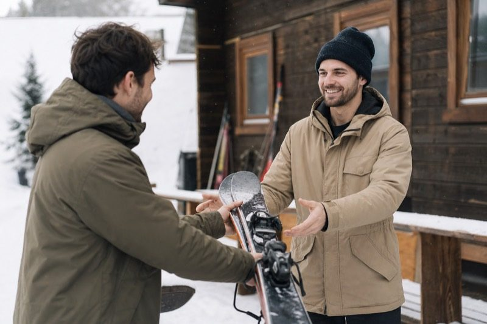
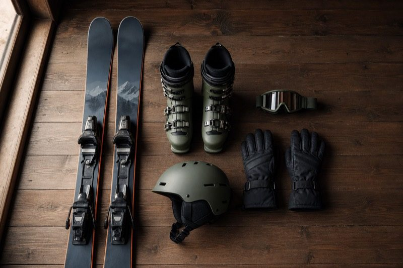
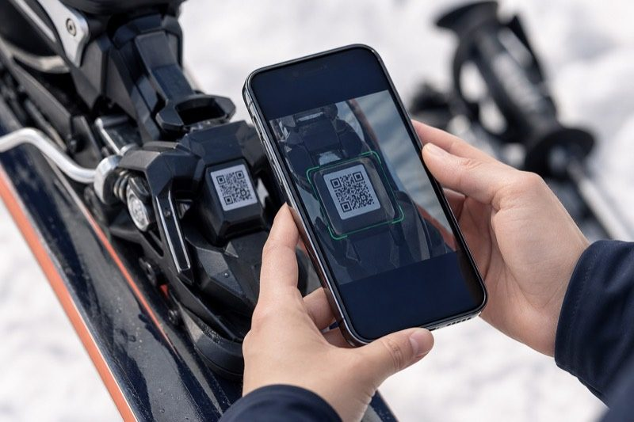
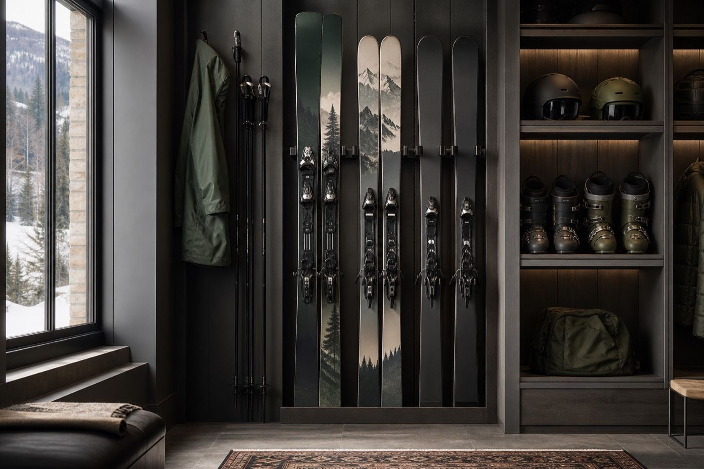
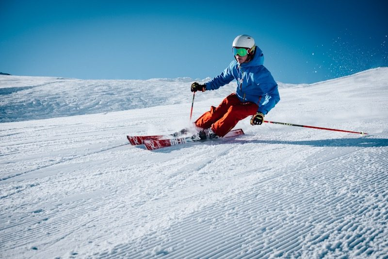
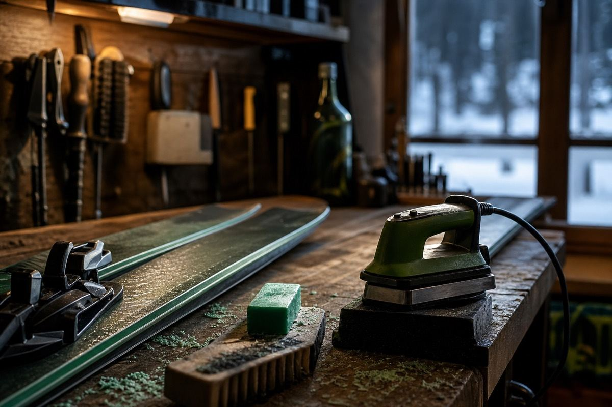
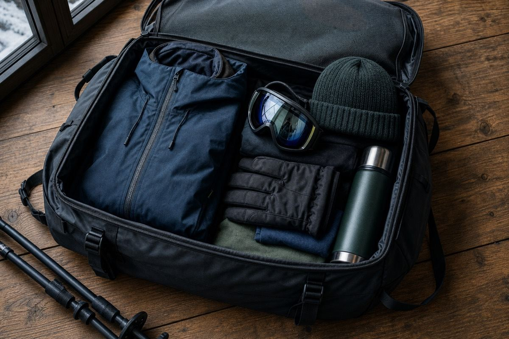

Help Center
Guides for sharing ski equipment with trusted people — private communities, invites, tools and Premium.
What is Skister?
Skister is a trusted ski sharing network built for friends, families and outdoor communities. While skiing remains our primary focus, members can also securely share other outdoor equipment such as hiking, camping and photography gear within their trusted network. Skister is not a marketplace. We never facilitate payments and encourage sharing only between people who know and trust each other. You list gear, invite friends and family, and track handoffs and returns with helpful reminders. Modern tools for skiers (DIN, ski length, packing, snow conditions and more) support adventures beyond winter too.
What is a Ski Network?
A Ski Network is your private circle around where you ski — friends, family, ski clubs and local groups you trust. It can be anchored by a ski resort, club, or local group.
A ski resort is a real-world place. Your Ski Network in Skister is the private sharing layer in the app — often starting by choosing a resort, club, or group where you ski.
Within your Ski Network you share ski equipment first, and camping, hiking or other outdoor gear when you need it — with people you invite, not an open marketplace.
How it works (3 steps)
Choose an activity first (skiing is primary), then the equipment category — skis, boots, helmets, camping, hiking and more. Include photos, brand/model, condition, and optional purchase year or replacement value.
Invite friends, family, ski clubs or local groups you trust. Requests stay within your circle.
Use QR handoff (if enabled) and confirm condition on return to avoid disputes.
Home screen
After you sign in, Home is your action hub for ski sharing:
- Borrow Gear — find ski gear from people you trust
- Share My Gear — list equipment for your private network
- Return Equipment — manage returns and reminders
- Scan QR — confirm a QR handoff
Quick Access shortcuts: Find Ski Gear, My Reservations, My Gear and Invite Friends.




Tools, Maintenance & Premium



Tools: Winter utilities (DIN calculator, ski length finder, boot size converter) plus a Snow Conditions preview (live mountain data under development), planning (trip planner, packing checklist), equipment care, and Emergency Information (verified mountain rescue numbers for Germany, Austria, Switzerland, France and Italy, with first-aid tips and offline cache) — available in the app Tools hub under Safety.
Maintenance Center: per-gear health tracking, maintenance history, smart care reminders, and warranty/receipt storage from My Gear.
Free: Unlimited equipment, invites, calendar, reservations, QR handoff, photos, Ski Network, Adventure Profile basics and tools.
Premium: Optional automation and insights — automatic reminders, Maintenance Center extras, usage analytics and network gap alerts. Sharing is never behind a paywall.
Safety & trust
- Condition checks: take photos before/after.
- Clear expectations: agree on pickup/return time and any special care instructions.
- My Adventure Profile: a trusted outdoor identity with Home Ski Network, interests, statistics, achievements and timeline — designed for confidence before sharing gear, not social media.
- Trust Score: calculated automatically from successful rentals, returns, verification and community activity. Tap Community Trust on your profile for the breakdown — it cannot be edited manually.
- Community Endorsements: after a completed borrow/lend together, members can leave one predefined endorsement. Only anonymous counts are shown.
- Mountain emergencies: open Tools → Emergency Information for verified contacts (emergency, mountain rescue, police, medical, avalanche where applicable), official rescue websites, and short first-aid guidance. Data works offline after the first load. This does not replace calling local emergency services.
Skister helps you track and communicate—no one can “guarantee safety”, but good habits reduce problems. In a real mountain emergency, always dial the local emergency number.
FAQ
What is a Ski Network?
A Ski Network is your private circle around where you ski — friends, family, ski clubs and local groups. A ski resort is a real-world place; your Ski Network in Skister is the private sharing layer in the app. Within it you can also share camping, hiking and other outdoor equipment.
What is My Adventure Profile?
Your Profile is a premium outdoor identity — who you are, what you enjoy, your Home Ski Network, community statistics, Trust Score, endorsements, achievements and adventure timeline. Skiing stays primary; camping, hiking and other outdoor interests appear as supporting activities.
How is the Trust Score calculated?
Automatically from successful lends and borrows, completed returns, account verification and community activity. You can view the checklist breakdown in the app. It cannot be edited manually.
Do you insure gear?
No. Skister is a communication platform. Users remain responsible for their items and agreements.
What if a QR scan fails?
You can still do a manual handoff: confirm the rental in the app and take a quick condition photo.
Who can see my gear?
Only your network (the people you invite or connect with). We don’t sell user data. Timeline privacy can be set to Only Me, Trusted Network, or Public (future-ready).
How do I get support?
Email support@skister.app.
Common issues
QR not scanning
Use the manual code option, and try again in good lighting with a clean camera lens.
No gear visible
Check that you’re connected to the right network and that your invites were accepted.
App not updating
Restart the app. If you’re offline or on a weak connection, try again after reconnecting.
Independence notice
Skister is an independent platform for private sharing. We are not affiliated with, endorsed by, or officially associated with any ski resort, ski club, event organizer, or other organization displayed within the app. All trademarks, names, and logos remain the property of their respective owners.